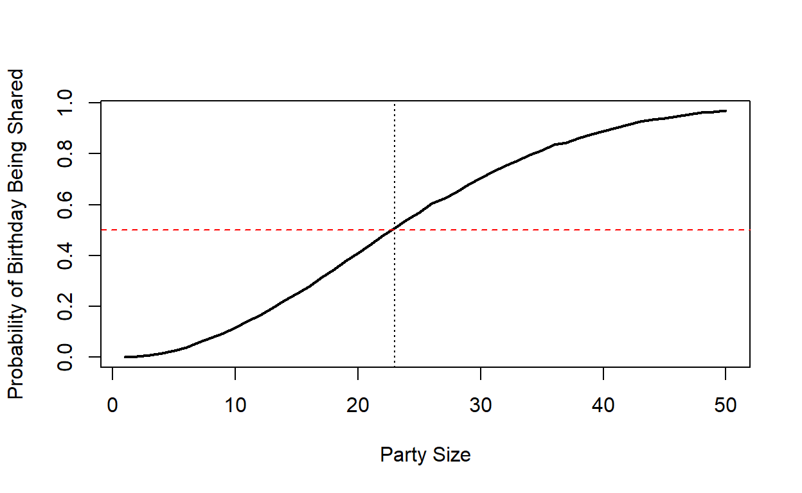

Do world cup squad members share birthdays?
The Birthday Problem is quite a well known puzzle. If you attended a party of 20 people or so and were asked how likely it was that any two people at the party shared a birthday - what would you think? Most people when they are first confronted with this question think the probability will be quite small. After all, there are 365 days in the year, and only 20 people at the party. However, it turns out that the chances are pretty decent.
There is, obviously, some probability mathematics behind this that will tell us that the chances of any two people sharing a birthday at the party of 20 people is around 41%. You can read more about the math here.
Instead of going through the math, I’d like to show this visually using a simulation. Then we’ll check this problem against some real world data - using soccer world cup squads.
What we’re doing below is to use sample() to randomly select n number of numbers between 1 and 365. These are our days of the year - we’re just going to ignore leap years. Importantly, we’re selecting these numbers WITH replacement.
For example, let’s select five numbers between 1 and 365 with replacement
sample(1:365, 5, T)
[1] 97 136 210 332 74As you can see from these numbers, none are duplicated. However, if we got 25 numbers, then we have more chance of getting some numbers twice:
vs <- sample(1:365, 25, T)
vs
[1] 328 345 242 230 23 76 65 251 141 281 182 262 363 139 284 342
[17] 78 238 46 98 141 5 140 318 125We next use the function duplicated() to find out if any of the numbers are …. duplicated.
duplicated(vs)
[1] FALSE FALSE FALSE FALSE FALSE FALSE FALSE FALSE FALSE FALSE FALSE
[12] FALSE FALSE FALSE FALSE FALSE FALSE FALSE FALSE FALSE TRUE FALSE
[23] FALSE FALSE FALSEHere, the 21st number is duplicated - which is 141. It appears twice in the list - this would correspond to a shared birthday of May 20th (the 141st day of the year).
The code below runs 20,000 lots of group sizes of 1-50. For each group size, and for each permutation, we count how many of the birthdays are duplicated:
nperm <- 20000
maxn <- 50
res <- matrix(NA, nrow = maxn, ncol = nperm)
for(n in 1:maxn) {
for(i in 1:nperm) {
x <- sample(1:365, n, T)
res[[n,i]] <- sum(duplicated(x))
}
}The table below visualizes the first 5 iterations of group sizes of 1-15. Obviously, if it’s a party of one person it’s a lame party and also nobody is going to share a birthday. What you can see in the results below, is that in the 3rd run, people shared birthdays when there were 8 or 15 people at the party. In the 4th run, people shared birthdays when there were 12 or 14 people at the party.
# first 5 iterations of group sizes 1-15
res[1:15,1:5]
[,1] [,2] [,3] [,4] [,5]
[1,] 0 0 0 0 0
[2,] 0 0 0 0 0
[3,] 0 0 0 0 0
[4,] 0 0 0 0 0
[5,] 0 0 0 0 0
[6,] 0 0 0 0 0
[7,] 0 0 0 0 0
[8,] 0 0 1 0 0
[9,] 0 0 0 0 0
[10,] 0 0 0 0 0
[11,] 0 0 0 0 0
[12,] 0 1 0 1 0
[13,] 0 0 0 0 0
[14,] 0 0 0 1 0
[15,] 1 0 1 0 0For each group size, we can count over all 20,000 iterations how many of the 20,000 instances had at least two people that shared a birthday. We can then work out the proportion of times this happens:
v <- apply(res, 1, function(x) sum(x>0))
round(v/nperm,2)
[1] 0.00 0.00 0.01 0.02 0.03 0.04 0.06 0.08 0.09 0.12 0.14 0.16 0.19
[14] 0.22 0.25 0.28 0.31 0.34 0.38 0.41 0.44 0.48 0.51 0.54 0.57 0.60
[27] 0.62 0.65 0.68 0.71 0.73 0.75 0.77 0.80 0.81 0.84 0.85 0.86 0.88
[40] 0.89 0.90 0.91 0.93 0.93 0.94 0.95 0.96 0.96 0.97 0.97This shows you that when there are only 5 people at the party, you have a 3% chance of there being shared birthdays. When there are 40 people at a party, there is a 89% chance of there being a shared birthday. It turns out that when there are 23 people at a party there is a 51% chance of there being a shared birthday. 23 is the number of people where it’s more likely for there to be people that share a birthday than not.
We can make a simple visualization of this. The solid black line represents the probability (y-axis) of at least two people sharing a birthday for a given group size (x-axis):
plot(1:maxn, v/nperm, type='l', lwd=2,
xlab="Party Size", ylab="Probability of Birthday Being Shared")
abline(h=0.5, col="red",lty=2)
abline(v=23, col="black",lty=3)
When soccer teams compete at major championships, coaches have to pick squads of 23 for the tournament. Obviously, based on the above, this is a fairly interesting number. It led me to wonder, what proportion of world cup squads have players that shared birthdays?
The 32 squads for the 2018 world cup are available here. What I’m doing below is to use the R package rvest to scrape these tables from wikipedia.
library(rvest)
URL <- "https://en.wikipedia.org/wiki/2018_FIFA_World_Cup_squads"
squads <- URL %>%
read_html %>%
html_nodes("table") %>%
html_table() %>%
head(32)The squads are stored in a list. Let’s look at the first four rows of the seventh squad, which is Portugal. It’s a bit ugly to look at because it’s split over several rows, but hopefully you can see what type of data we have:
squads[[7]][1:4,]
No. Pos. Player Date of birth (age)
1 1 1GK Rui Patrício (1988-02-15)15 February 1988 (aged 30)
2 2 2DF Bruno Alves (1981-11-27)27 November 1981 (aged 36)
3 3 2DF Pepe (1983-02-26)26 February 1983 (aged 35)
4 4 3MF Manuel Fernandes (1986-02-05)5 February 1986 (aged 32)
Caps Goals Club
1 69 0 Sporting CP
2 96 11 Rangers
3 95 5 Besiktas
4 14 3 Lokomotiv MoscowEach table has the following column names:
colnames(squads[[1]])
[1] "No." "Pos." "Player"
[4] "Date of birth (age)" "Caps" "Goals"
[7] "Club" As you might notice, the date of birth column is a bit of a mess, which we’ll deal with shortly. There is also no ‘country’ column, which would be useful. To create this, I realized that on the same wikipedia page, if we grabbed all text that was written with a <h3> HTML tag, we could get the country names and add them in to each squad - after getting rid of a bit of extraneous text that comes along at the end of each them when we scrape the data.
Shown below are the first 4 rows of the 23rd squad, South Korea, once we’ve added in the country name:
names(squads) <- URL %>%
read_html %>%
html_nodes("h3") %>%
html_text() %>%
head(32) %>%
gsub("\\[edit\\]","",.)
squads <- Map(cbind, squads, country = names(squads))
squads[[23]][1:4,]
No. Pos. Player Date of birth (age)
1 1 1GK Kim Seung-gyu (1990-09-30)30 September 1990 (aged 27)
2 2 2DF Lee Yong (1986-12-24)24 December 1986 (aged 31)
3 3 2DF Jung Seung-hyun (1994-04-03)3 April 1994 (aged 24)
4 4 2DF Oh Ban-suk (1988-05-20)20 May 1988 (aged 30)
Caps Goals Club country
1 33 0 Vissel Kobe South Korea
2 28 0 Jeonbuk Hyundai Motors South Korea
3 6 0 Sagan Tosu South Korea
4 2 0 Jeju United South KoreaWhat we really care about for this post is whether players in the same squad share a birthday. Let’s illustrate this looking at South Korea’s birthdays.
Here are all the birthdays as listed in the date of birth column:
x <- squads[[23]]$`Date of birth (age)`
x
[1] "(1990-09-30)30 September 1990 (aged 27)"
[2] "(1986-12-24)24 December 1986 (aged 31)"
[3] "(1994-04-03)3 April 1994 (aged 24)"
[4] "(1988-05-20)20 May 1988 (aged 30)"
[5] "(1988-10-04)4 October 1988 (aged 29)"
[6] "(1987-01-16)16 January 1987 (aged 31)"
[7] "(1992-07-08)8 July 1992 (aged 25)"
[8] "(1990-10-30)30 October 1990 (aged 27)"
[9] "(1988-04-14)14 April 1988 (aged 30)"
[10] "(1998-01-06)6 January 1998 (aged 20)"
[11] "(1996-01-26)26 January 1996 (aged 22)"
[12] "(1990-02-25)25 February 1990 (aged 28)"
[13] "(1989-02-27)27 February 1989 (aged 29)"
[14] "(1990-09-17)17 September 1990 (aged 27)"
[15] "(1989-12-14)14 December 1989 (aged 28)"
[16] "(1989-01-24)24 January 1989 (aged 29)"
[17] "(1992-08-10)10 August 1992 (aged 25)"
[18] "(1992-06-09)9 June 1992 (aged 26)"
[19] "(1990-02-27)27 February 1990 (aged 28)"
[20] "(1991-09-28)28 September 1991 (aged 26)"
[21] "(1987-07-06)6 July 1987 (aged 30)"
[22] "(1988-03-10)10 March 1988 (aged 30)"
[23] "(1991-09-25)25 September 1991 (aged 26)"We don’t need all this stuff, so we can grab everything inside the brackets using a regex. To be honest, I’m sure there is an easier way of doing this - this is just the way I could figure out quickly:
#get all inside brackets
gsub("\\(([^()]*)\\)|.", "\\1", x, perl=T)
[1] "1990-09-30aged 27" "1986-12-24aged 31" "1994-04-03aged 24"
[4] "1988-05-20aged 30" "1988-10-04aged 29" "1987-01-16aged 31"
[7] "1992-07-08aged 25" "1990-10-30aged 27" "1988-04-14aged 30"
[10] "1998-01-06aged 20" "1996-01-26aged 22" "1990-02-25aged 28"
[13] "1989-02-27aged 29" "1990-09-17aged 27" "1989-12-14aged 28"
[16] "1989-01-24aged 29" "1992-08-10aged 25" "1992-06-09aged 26"
[19] "1990-02-27aged 28" "1991-09-28aged 26" "1987-07-06aged 30"
[22] "1988-03-10aged 30" "1991-09-25aged 26"Clearly, this is still too much info. However, because the data is so uniform in type, we can use substr() to get the text from the 6th to 10th character of each string. That corresponds to the month and day of birth (years aren’t important for this problem):
#day-month
vec <- substr(gsub("\\(([^()]*)\\)|.", "\\1", x, perl=T),6,10)
vec
[1] "09-30" "12-24" "04-03" "05-20" "10-04" "01-16" "07-08" "10-30"
[9] "04-14" "01-06" "01-26" "02-25" "02-27" "09-17" "12-14" "01-24"
[17] "08-10" "06-09" "02-27" "09-28" "07-06" "03-10" "09-25"We can used duplicated() to now return all the dates that are duplicates:
duplicated(vec) | duplicated(vec, fromLast=TRUE)
[1] FALSE FALSE FALSE FALSE FALSE FALSE FALSE FALSE FALSE FALSE FALSE
[12] FALSE TRUE FALSE FALSE FALSE FALSE FALSE TRUE FALSE FALSE FALSE
[23] FALSE
vec[duplicated(vec) | duplicated(vec, fromLast=TRUE)]
[1] "02-27" "02-27"So, in the South Korean squad, there are two players who share birthdays on 27th February. These players happen to be Koo Ja-cheol & Kim Young-gwon - but this is all revealed at the bottom.
The below is a custom function using the above logic to check each squad for duplicated birthdays and to put them into each squad’s dataframe:
dob_dup <- function(df){
x <- df$`Date of birth (age)`
vec <- substr(gsub("\\(([^()]*)\\)|.", "\\1", x, perl=T),6,10)
df$daymonth <- vec
df$dupl <- duplicated(vec) | duplicated(vec, fromLast=TRUE)
return(df)
}Here, we apply the function to all squads (using map() from tidyverse to be able to apply the function over each squad dataframe in the list). I’m showing you Morocco’s first five players as an example:
library(tidyverse)
squads <- squads %>% map(dob_dup)
squads[[6]][1:5,]
No. Pos. Player
1 1 1GK Yassine Bounou
2 2 2DF Achraf Hakimi
3 3 2DF Hamza Mendyl
4 4 2DF Manuel da Costa
5 5 2DF Medhi Benatia (captain)
Date of birth (age) Caps Goals
1 (1991-04-05)5 April 1991 (aged 27) 11 0
2 (1998-11-04)4 November 1998 (aged 19) 10 1
3 (1997-10-21)21 October 1997 (aged 20) 13 0
4 (1986-05-06)6 May 1986 (aged 32) 28 1
5 (1987-04-17)17 April 1987 (aged 31) 57 2
Club country daymonth dupl
1 Girona Morocco 04-05 TRUE
2 Real Madrid Morocco 11-04 FALSE
3 Lille Morocco 10-21 FALSE
4 Istanbul Basaksehir Morocco 05-06 FALSE
5 Juventus Morocco 04-17 FALSEApplying this to every squad, we can then count up the number of players that share a birthday in each squad of 23 players:
v <- squads %>% map(~ sum(.$dupl)) %>% unlist()
v
Egypt Russia Saudi Arabia Uruguay Iran
0 2 0 0 2
Morocco Portugal Spain Australia Denmark
4 6 2 2 0
France Peru Argentina Croatia Iceland
2 2 0 2 0
Nigeria Brazil Costa Rica Serbia Switzerland
2 4 2 0 0
Germany Mexico South Korea Sweden Belgium
2 0 2 0 0
England Panama Tunisia Colombia Japan
2 0 0 0 0
Poland Senegal
8 0 Poland lead the way with 8 players sharing birthdays ! Here they are:
squads[[31]] %>% filter(dupl==T) %>% select(1:3,5,7,9)
No. Pos. Player Caps Club daymonth
1 1 1GK Wojciech Szczesny 35 Juventus 04-18
2 2 2DF Michal Pazdan 33 Legia Warsaw 09-21
3 6 3MF Jacek Góralski 5 Ludogorets Razgrad 09-21
4 10 3MF Grzegorz Krychowiak 51 West Bromwich Albion 01-29
5 14 4FW Lukasz Teodorczyk 17 Anderlecht 06-03
6 20 2DF Lukasz Piszczek 63 Borussia Dortmund 06-03
7 21 3MF Rafal Kurzawa 3 Górnik Zabrze 01-29
8 22 1GK Lukasz Fabianski 45 Swansea City 04-18So, how many of the thirty-two 23 man squads had at least two players that shared a birthday ?
v[v>0]
Russia Iran Morocco Portugal Spain
2 2 4 6 2
Australia France Peru Croatia Nigeria
2 2 2 2 2
Brazil Costa Rica Germany South Korea England
4 2 2 2 2
Poland
8 It turns out that 16/32 squads had players that shared birthdays - so 50% which is basically what our simulation above told us was the probability.
However, this is not probably the full story. You may notice that we have more shared birthdays than two in many squads. Interestingly, it turns out that soccer squads may not be completely random samples with respect to birthdays. Often in sports teams, soccer included, players tend to be born in certain months of the year. This is often due to older children in age groups being picked for school teams and so on. We may well have some sampling bias in our data - something we can explore in another post.
Out of interest, here is the full list of all players that share birthdays in squads:
squads %>% map(dob_dup) %>% map(~filter(., dupl==T)) %>%
map(~ select(., c(3, 5,8:9))) %>% data.table::rbindlist()
Player Caps country daymonth
1: Aleksei Miranchuk 18 Russia 10-17
2: Anton Miranchuk 6 Russia 10-17
3: Saman Ghoddos 8 Iran 09-06
4: Pejman Montazeri 46 Iran 09-06
5: Yassine Bounou 11 Morocco 04-05
6: Younès Belhanda 47 Morocco 02-25
7: Nabil Dirar 34 Morocco 02-25
8: Ahmed Reda Tagnaouti 2 Morocco 04-05
9: Manuel Fernandes 14 Portugal 02-05
10: Raphaël Guerreiro 24 Portugal 12-22
11: José Fonte 31 Portugal 12-22
12: Cristiano Ronaldo (captain) 150 Portugal 02-05
13: João Moutinho 110 Portugal 09-08
14: Bruno Fernandes 6 Portugal 09-08
15: Koke 40 Spain 01-08
16: David Silva 121 Spain 01-08
17: Aziz Behich 23 Australia 12-16
18: Tom Rogic 37 Australia 12-16
19: Benjamin Pavard 6 France 03-28
20: Steve Mandanda 27 France 03-28
21: Jefferson Farfán 84 Peru 10-26
22: Nilson Loyola 3 Peru 10-26
23: Mateo Kovacic 41 Croatia 05-06
24: Marko Pjaca 16 Croatia 05-06
25: Wilfred Ndidi 17 Nigeria 12-16
26: Tyronne Ebuehi 7 Nigeria 12-16
27: Alisson 26 Brazil 10-02
28: Filipe Luís 33 Brazil 08-09
29: Willian 57 Brazil 08-09
30: Roberto Firmino 21 Brazil 10-02
31: Bryan Oviedo 44 Costa Rica 02-18
32: David Guzmán 43 Costa Rica 02-18
33: Niklas Süle 11 Germany 09-03
34: Jérôme Boateng 71 Germany 09-03
35: Koo Ja-cheol 68 South Korea 02-27
36: Kim Young-gwon 53 South Korea 02-27
37: Kyle Walker 35 England 05-28
38: John Stones 26 England 05-28
39: Wojciech Szczesny 35 Poland 04-18
40: Michal Pazdan 33 Poland 09-21
41: Jacek Góralski 5 Poland 09-21
42: Grzegorz Krychowiak 51 Poland 01-29
43: Lukasz Teodorczyk 17 Poland 06-03
44: Lukasz Piszczek 63 Poland 06-03
45: Rafal Kurzawa 3 Poland 01-29
46: Lukasz Fabianski 45 Poland 04-18
Player Caps country daymonth
For attribution, please cite this work as
Curley (2020, Oct. 14). James' R Blog: World Cup Birthday Problem. Retrieved from https://jamescurley.blog/posts/2020-10-13-world-cup-birthday-problem/
BibTeX citation
@misc{curley2020world,
author = {Curley, James},
title = {James' R Blog: World Cup Birthday Problem},
url = {https://jamescurley.blog/posts/2020-10-13-world-cup-birthday-problem/},
year = {2020}
}